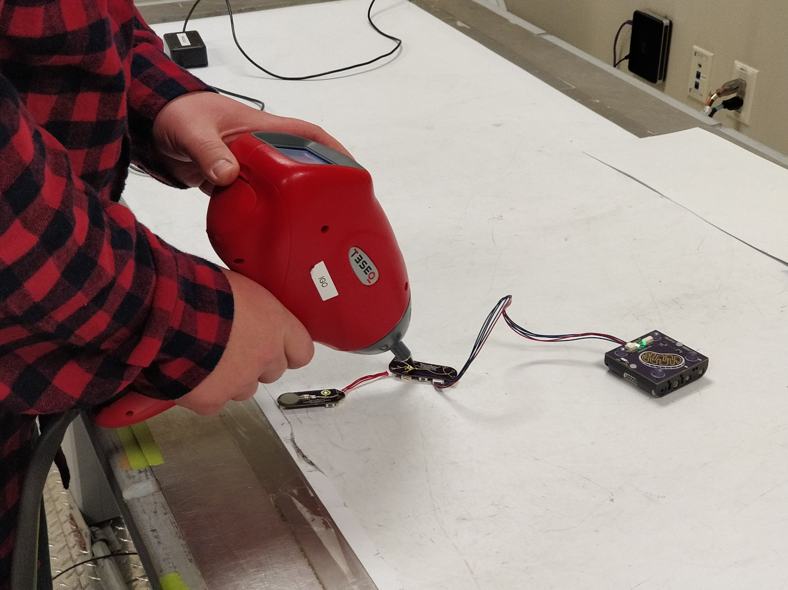
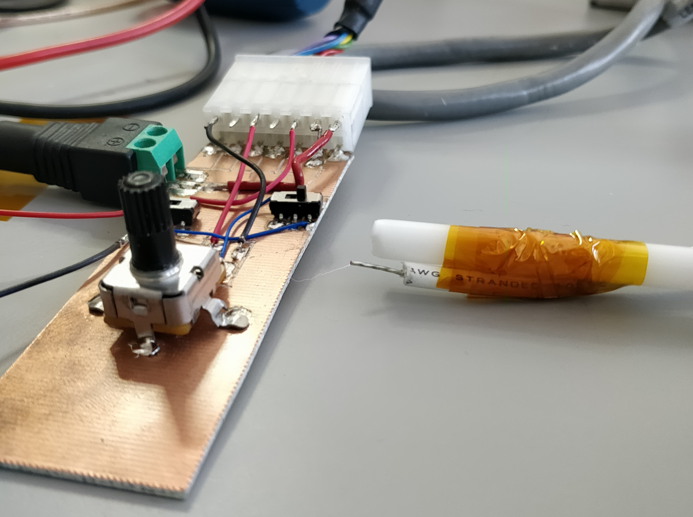
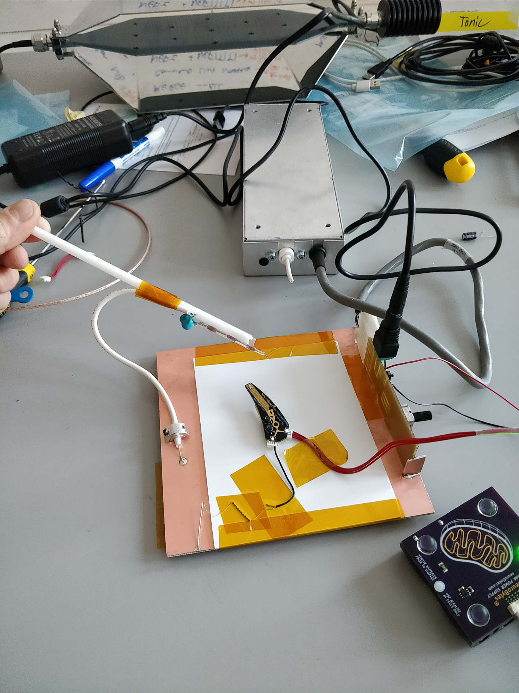

$50 ESD pre-tester
You thought electrostatic discharge testing at a lab was expensive? Try buying one of the sweet looking ray guns the labs use to run the tests so you can pre-check boards yourself; they cost more than my car!

After a few of our NeuroBytes boards failed the first round of ESD testing (shown above), I built an ESD pre-tester out of an eBay-sourced modular 8kV power supply, a few 100 pF capacitors, a bit of copper clad FR4, and a length of insulating Delrin rod. Most of the work involved building the circuit to trick the power supply into thinking it was in a mass spectrometer:

The resultant device saved us thousands of dollars and months of lab testing, and makes cool sparks as a bonus.

© copyright zach fredin, 2018